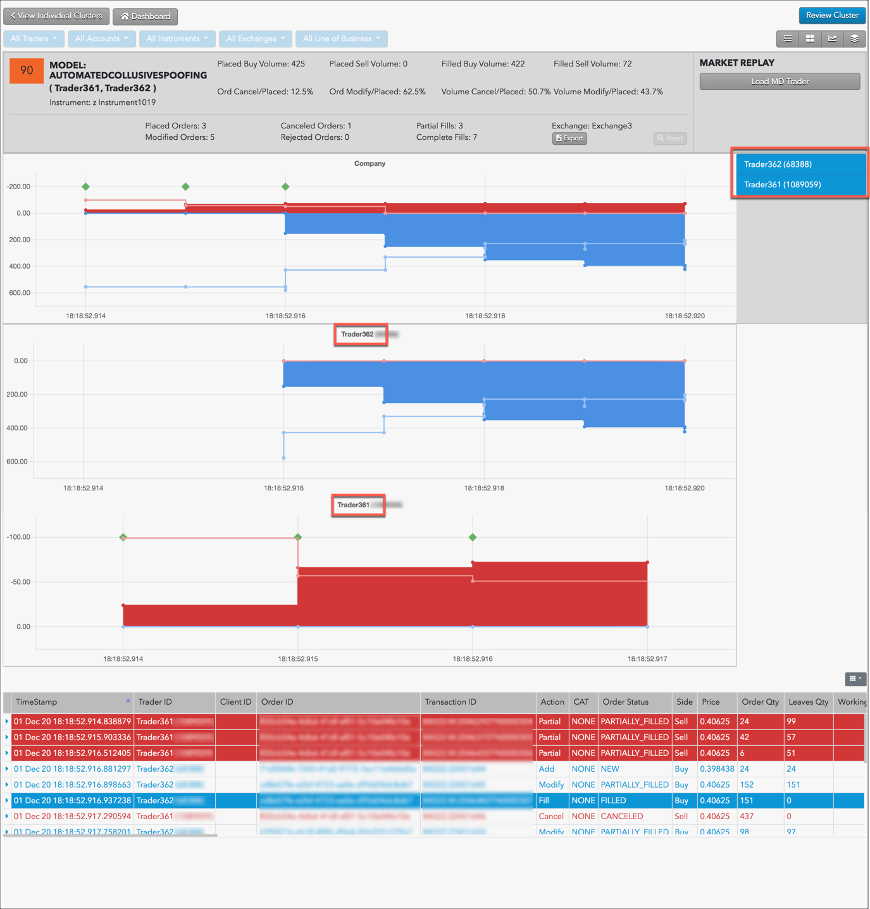
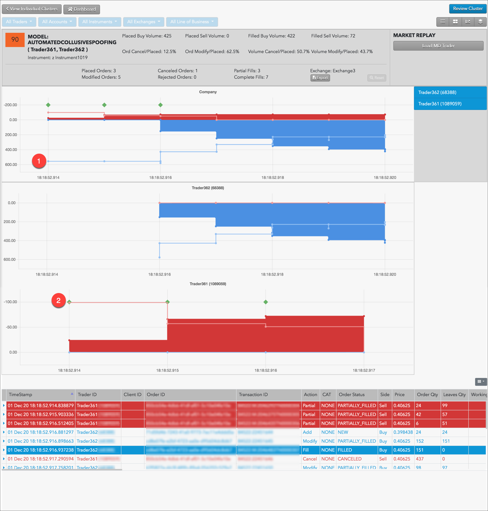
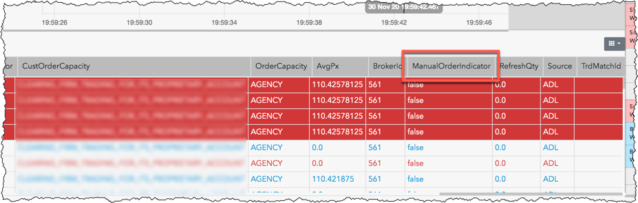
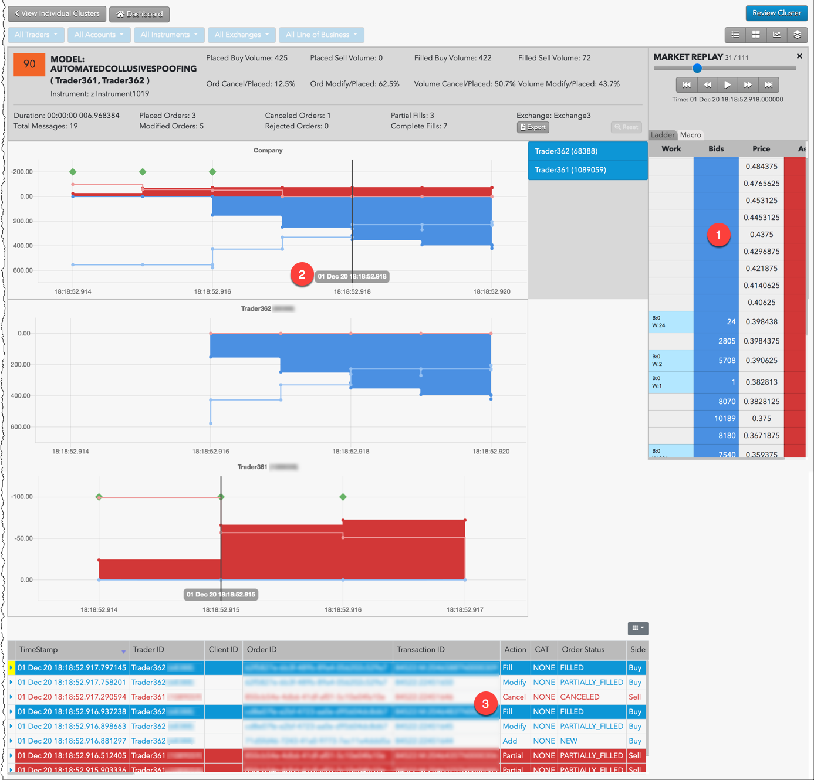

Automated collusive spoofing is an attempt by two or more traders to use automated trading strategies to deceive the market into thinking that an instrument has more interest, liquidity, or depth. For example, one trader's automated strategy will submit large orders on one side for the purpose of having the other trader's strategy execute smaller orders on the opposite side. Once the smaller orders are filled, the first automated strategy cancels the larger orders.
Note:The Automated Collusive Spoofing Model in TT Score is specifically tuned for automated trading strategies and detects potential spoofing activity in manual or mixed trading. Only trading events marked as originating from automated strategies in FIX Tag 1028 are clustered and scored under this model. Any clusters that contain trading events that are not marked as originating from automated trading strategies in FIX Tag 1028 are still found in the Spoofing or Collusive Spoofing models.
TT Score detects a variety of collective spoofing patterns, including:
TT Score computes a cluster score based on how similar the activity in the cluster matches trading activity that has drawn regulatory attention in other situations.
Higher scores indicate the trading activity within a cluster is more likely to risk regulatory concern. A company's risk monitors can use these scores to prioritize resources for investing which users' trading activity poses the most regulatory risk.
For the automated collusive spoofing pattern, each cluster is assigned a risk score on a sliding scale between 0-100. This score represents the probability that spoofing occurred during the duration of the cluster's trading activity.
{% include score-method.html %}The metrics for the Collusive Spoofing model combine the total activity of all traders. The ladder data aggregates volume from all the traders in the cluster.
The Scorecard Metrics section measures the following statistics related to collusive spoofing:
Use the Cluster Scorecard to identify the specific trading activity that triggered the automated collusive spoofing score. The pressure chart in the scorecard shows the company level or aggregate trading activity for the trader IDs identified in the cluster. Click a trader ID in right side of the chart to display that individual trader's activity in relation to the aggregate trading activity for the "company" shown in the top chart.

The chart contains visual clues about the automated collusive spoofing pattern. For example, the following chart is for a high scoring cluster that shows a simple spoofing pattern involving three traders.

In this example:
Note: The green diamond above the fill is an "imbalanced fill indicator" that marks where a trader receives a fill on the opposite side of the majority of their working volume.
In the Audit Trail, the ManualOrderIndicator column displays "false" (Tag 1028=N) indicating the orders were submitted by the traders using an automated trading strategy.

The chart in the scorecard shows activity based on order volume over time, but does not show prices and liquidity. Looking at the prices for the potential spoofing orders can help you determine whether the automated trading strategy was placing those orders far off the market in an attempt to deceive traders.
In the Cluster Scorecard, you can click Market Replay to view how orders interacted with the market at various price levels.
For example, you can see in the replay when the automated trading strategy begins submitting and canceling large Buy or Sell orders to create the illusion of buy-side or sell-side pressure. As you continue replaying the market activity, you can observe the state of the market and the trader's activity at each point in time.

In this example: